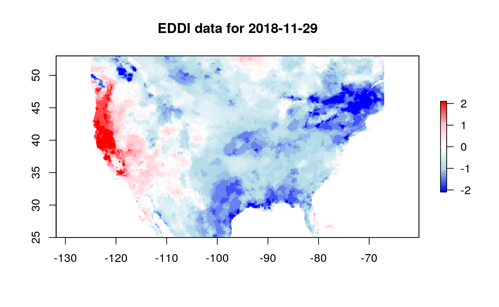

The eddi R package facilitates access to the NOAA Evaporative Demand Drought Index (EDDI) data product.
Example
The EDDI product exists for multiple timescales, including the 1 to 12 week and 1 to 12 months scales. Shorter time scales can detect short term droughts, e.g., “flash droughts”, and longer time scales are appropriate for detecting long term drought. For more information see https://www.esrl.noaa.gov/psd/eddi/.
This is a basic example which shows you how to get EDDI data for Nov 29, 2018 at the one month timescale:
library(eddi)
eddi_data <- get_eddi(date = "2018-11-29", timescale = "1 month")
eddi_data
#> class : RasterStack
#> dimensions : 224, 464, 103936, 1 (nrow, ncol, ncell, nlayers)
#> resolution : 0.125, 0.125 (x, y)
#> extent : -125, -67, 25, 53 (xmin, xmax, ymin, ymax)
#> crs : +init=epsg:4326 +proj=longlat +datum=WGS84 +no_defs +ellps=WGS84 +towgs84=0,0,0
#> names : EDDI_ETrs_01mn_20181129This will always return a RasterStack object with each layer in the stack corresponding to a date, that can be visualized using raster::plot. Here, large positive values indicate exceptionally dry conditions, and large negative values indicate exceptionally wet conditions, with values of 0 indicating median EDDI values.
color_pal <- colorRampPalette(c("blue", "lightblue", "white", "pink", "red"))
raster::plot(eddi_data, col = color_pal(255), main = "EDDI data for 2018-11-29")
EDDI Resources
A user guide for EDDI can be found here: https://www.esrl.noaa.gov/psd/eddi/pdf/EDDI_UserGuide_v1.0.pdf
For the science behind EDDI, see these two papers:
- M. Hobbins, A. Wood, D. McEvoy, J. Huntington, C. Morton, M. Anderson, and C. Hain (June 2016): The Evaporative Demand Drought Index: Part I – Linking Drought Evolution to Variations in Evaporative Demand. J. Hydrometeor., 17(6), 1745-1761.
- D. J. McEvoy, J. L. Huntington, M. T. Hobbins, A. Wood, C. Morton, M. Anderson, and C. Hain (June 2016): The Evaporative Demand Drought Index: Part II – CONUS-wide Assessment Against Common Drought Indicators. J. Hydrometeor., 17(6), 1763-1779.